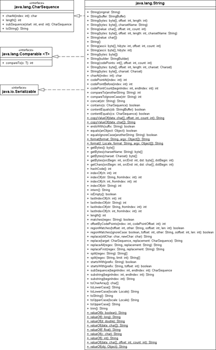

4.4 Die Klasse String und ihre Methoden
Die Entwickler von Java haben eine Symbiose zwischen String als Klasse und dem String als eingebautem Datentyp vorgenommen. Die Sonderbehandlung gegenüber anderen Objekten ist an zwei Punkten abzulesen:
- Die Sprache ermöglicht die direkte Konstruktion von String-Objekten aus String-Literalen (Zeichenketten in doppelten Anführungszeichen).
- Die Konkatenation (Aneinanderreihung von Strings mit +) von mehreren Strings ist erlaubt, aber Plus ist für keinen anderen Objekttyp erlaubt. Es lassen sich zum Beispiel nicht zwei Point-Objekte addieren. Mit dem Plus auf String-Objekten ist also ein besonderer Operator auf der Klasse String definiert, der nicht eigenständig auf anderen Klassen definiert werden kann. Java unterstützt keine überladenen Operatoren für Klassen, und dieses Plus ist ein Abweichler.
4.4.1 String-Literale als String-Objekte für konstante Zeichenketten
Damit wir Zeichenketten nutzen können, muss ein Objekt der Klasse String vorliegen. Das Schöne ist, dass alles in doppelten Anführungszeichen schon automatisch ein String-Objekt ist. Das bedeutet auch, dass hinter dem String-Literal gleich ein Punkt für den Methodenaufruf stehen kann.
| Beispiel |
|
"Hi Chris".length() liefert die Länge der Zeichenkette. Das Ergebnis ist 8. Leerzeichen und Sonderzeichen zählen mit. |
Nur Zeichenfolgen in doppelten Anführungszeichen sind String-Literale und somit schon gleich vorkonstruierte Objekte. Das gilt für StringBuilder/StringBuffer nicht – sie müssen von Hand mit new erzeugt werden. Nutzen wir String-Literale, so sollten wir ausdrücklich davon absehen, String-Objekte mit new zu erzeugen; ein s = new String("String") ist unsinnig; s = "String" ist korrekt.
Abbildung 4.4: UML-Diagramm der umfangreichen Klasse String
4.4.2 Konkatenation mit +
Mehrere Beispiele haben schon gezeigt, dass Strings mit + konkateniert werden können.
| Beispiel |
|
Haben die Glieder bei der Konkatenation unterschiedliche Datentypen, und einer ist String, werden diese automatisch auf String gebracht. int age = 37; |
| Hinweis |
|
Intern ist die Aneinanderreihung über Methoden der Klassen String, StringBuilder beziehungsweise StringBuffer realisiert. Die Konkatenation über + ist insbesondere in Schleifen nicht performant, und später werden wir im Abschnitt 4.6.4 bessere Lösungen kennenlernen. |
4.4.3 String-Länge und Test auf Leerstring
String-Objekte verwalten intern die Zeichenreihe, die sie repräsentieren, und bieten eine Vielzahl von Methoden, um die Eigenschaften des Objekts preiszugeben. Eine Methode haben wir schon benutzt: length(). Für String-Objekte ist diese so implementiert, dass die Anzahl der Zeichen im String (die Länge des Strings) zurückgegeben wird. Um herauszufinden, ob der String keine Zeichen hat, lässt sich neben length() == 0 auch die Methode isEmpty() nutzen:
| Anweisung | Ergebnis |
| "".length() | 0 |
| "".isEmpty() | true |
| " ".length() | 1 |
| " ".isEmpty() | false |
| String s = null; s.length(); |  NullPointerException NullPointerException
|
Eine praktische Hilfsmethode: isNullOrEmpty()
Während das .NET-Framework etwa die statische Member-Funktion IsNullOrEmpty- (String) anbietet, um zu testen, ob die übergebene Referenz null oder die Zeichenkette leer ist, so muss das in Java getrennt getestet werden. Hier ist eine eigene statische Utility-Methode praktisch:
Listing 4.3: LengthAndEmptyDemo.java, isNullOrEmpty()
/**
* Checks if a String is {@code null} or empty ({@code ""}).
*
* <pre>
* StringUtils.isEmpty(null) == true
* StringUtils.isEmpty("") == true
* StringUtils.isEmpty(" ") == false
* StringUtils.isEmpty("bob") == false
* StringUtils.isEmpty(" bob ") == false
* </pre>
*
* @param str The String to check, may be {@code null}.
* @return {@code true} if the String is empty or {@code null}, {@code false}
* otherwise.
*/
public static boolean isNullOrEmpty( String str )
{
return str == null || str.length() == 0;
}
Ob der String nur aus Leerzeichen besteht, testet die Methode nicht.
4.4.4 Zugriff auf ein bestimmtes Zeichen mit charAt( )
Die vielleicht wichtigste Methode der Klasse String ist charAt(int index). Diese Methode liefert das entsprechende Zeichen an einer Stelle, die »Index« genannt wird. Dies bietet eine Möglichkeit, die Zeichen eines Strings (zusammen mit der Methode length()) zu durchlaufen. Ist der Index kleiner null oder größer beziehungsweise gleich der Anzahl der Zeichen im String, so löst die Methode eine StringIndexOutOfBoundsException[115](Mit 31 Zeichen gehört dieser Klassenname schon zu den längsten. Übertroffen wird er aber noch um fünf Zeichen von TransformerFactoryConfigurationError. Im Spring-Paket gibt es aber JdbcUpdateAffectedIncorrectNumberOfRowsException – auch nicht von schlechten Eltern.) mit der Fehlerstelle aus.
| Beispiel |
|
Liefere das erste und letzte Zeichen im String s: String s = "Ich bin nicht dick! Ich habe nur weiche Formen."; |
Wir müssen bedenken, dass die Zählung wieder bei null beginnt. Daher müssen wir von der Länge des Strings eine Stelle abziehen. Da der Vergleich auf den korrekten Bereich bei jedem Zugriff auf charAt() stattfindet, ist zu überlegen, ob der String bei mehrmaligem Zugriff nicht stattdessen einmalig in ein eigenes Zeichen-Array kopiert werden sollte.
4.4.5 Nach enthaltenen Zeichen und Zeichenfolgen suchen
Die Objektmethode contains(CharSequence) testet, ob ein Teilstring (engl. substring) in der Zeichenkette vorkommt, und liefert true, wenn das der Fall ist. Groß-/Kleinschreibung ist relevant. Im nächsten Programm wollen wir testen, ob eine E-Mail mögliche Spam-Wörter enthält.
Listing 4.4: EmailSpamChecker.java
public class EMailSpamChecker
{
public static void main( String[] args )
{
String email1 = "Hallo Chris,...";
System.out.println( containsSpam( email1 ) ); // false
String email2 = "Kaufe Viagra! Noch billiga und macht noch härta!";
System.out.println( containsSpam( email2 ) ); // true
}
public static boolean containsSpam( String text )
{
return text.contains( "Viagra" ) || text.contains( "Ding-Dong-Verlängerung" );
}
}
Fundstelle mit indexOf() zurückgeben
Die Methode contains() ist nicht mit einem char überladen, kann also nicht nach einem einzelnen Zeichen suchen, es sei denn, der String bestünde nur aus einem Zeichen. Dazu ist indexOf() in der Lage: Die Methode liefert die Fundstelle eines Zeichens beziehungsweise Teilstrings. Findet indexOf() nichts, liefert sie –1.
| Beispiel |
|
Ein Zeichen mit indexOf() suchen: |
|
String s = "Ernest Gräfenberg"; |
Wie contains() unterscheidet die Suche zwischen Groß- und Kleinschreibung. Die Zeichen in einem String sind wie Array-Elemente ab 0 durchnummeriert. Ist das Index-Argument kleiner 0, so wird dies ignoriert und der Index automatisch auf 0 gesetzt.
Die indexOf()-Methode ist nicht nur mit char parametrisiert, sondern auch mit String[116](Der Parametertyp String erlaubt natürlich nur Objekte vom Typ String, und Unterklassen von String gibt es nicht. Allerdings gibt es andere Klassen in Java, die Zeichenfolgen beschreiben, etwa StringBuilder oder StringBuffer. Diese Typen unterstützt die indexOf()-Methode nicht. Das ist schade, denn indexOf() hätte statt String durchaus einen allgemeineren Typ CharSequence erwarten können, um den String sowie StringBuilder/StringBuffer zu implementieren (zu dieser Schnittstelle in Abschnitt 4.6) mehr.), um nach ganzen Zeichenfolgen zu suchen und die Startposition zurückzugeben.
| Beispiel |
|
indexOf() mit der Suche nach einem Teilstring: String str = "In Deutschland gibt es immer noch ein Ruhrgebiet, " + |
Vom Ende an suchen
Genauso wie am Anfang gesucht werden kann, ist es auch möglich, am Ende zu beginnen.
Die Parameter der char-orientierten Methoden indexOf() und lastIndexOf() sind alle vom Typ int und nicht, wie man spontan erwarten könnte, vom Typ char und int. Das zu suchende Zeichen wird als erstes int-Argument übergeben. Die Umwandlung des char in ein int nimmt der Java-Compiler automatisch vor, sodass dies nicht weiter auffällt. Bedauerlicherweise kann es dadurch aber zu Verwechslungen bei der Reihenfolge der Argumente kommen: Bei s.indexOf(start, c) wird der erste Parameter start als Zeichen interpretiert und das gewünschte Zeichen c als Startposition der Suche.
Anzahl der Teilstrings einer Zeichenkette *
Bisher bietet die Java-Bibliothek keine direkte Methode, um die Anzahl der Teilstrings einer Zeichenkette herauszufinden. Eine solche Methode ist jedoch schnell geschrieben:
Listing 4.5: CountMatches.java
public class CountMatches
{
public static int frequency( String source, String part )
{
if ( source == null || source.isEmpty() || part == null || part.isEmpty() )
return 0;
int count = 0;
for ( int pos = 0; (pos = source.indexOf( part, pos )) != –1; count++ )
pos += part.length();
return count;
}
public static void main( String[] args )
{
System.out.println( frequency( "schlingelschlangel", "sch" ) ); // 2
System.out.println( frequency( "schlingelschlangel", "ing" ) ); // 1
System.out.println( frequency( "schlingelschlangel", "" ) ); // 0
}
}
4.4.6 Das Hangman-Spiel
Geschätzte 90 Prozent aller Praxisaufgaben lösen die Methoden, die wir bisher schon kennengelernt haben:
- int charAt(int)
- int length()
- boolean equals(Object)
- boolean contains(CharSequence)
- int indexOf(char), int indexOf(String)
Genau die Methoden wollen wir für ein kleines Spiel nutzen, das berühmte Hangman-Spiel. Hierbei geht es darum, alle Buchstaben eines Wortes zu raten. Am Anfang ist jeder Buchstabe durch einen Unterstrich unkenntlich gemacht. Der Benutzer fängt an zu raten und füllt nach und nach die einzelnen Platzhalter aus. Gelingt es dem Spieler nicht, nach einer festen Anzahl von Runden das Wort zu erraten, hat er verloren.
Listing 4.6: Hangman1.java
public class Hangman1
{
public static void main( String[] args )
{
String hangmanWord = "alligatoralley";
String usedChars = "";
String guessedWord = "";
for ( int i = 0; i < hangmanWord.length(); i++ )
guessedWord += "_";
for ( int guesses = 1; ; )
{
if ( guesses == 10 )
{
System.out.printf( "Nach 10 Versuchen ist jetzt Schluss. Sorry! "+
"Apropos, das Wort war '%s'.", hangmanWord );
break;
}
System.out.printf( "Runde %d. Bisher geraten: %s. Was wählst du für ein
Zeichen?%n", guesses, guessedWord );
char c = new java.util.Scanner( System.in ).next().charAt( 0 );
if ( usedChars.indexOf( c ) >= 0 )
{
System.out.printf( "%c hast du schon mal getippt!%n", c );
guesses++;
}
else // Zeichen wurde noch nicht benutzt
{
usedChars += c;
if ( hangmanWord.indexOf( c ) >= 0 )
{
guessedWord = "";
for ( int i = 0; i < hangmanWord.length(); i++ )
guessedWord += usedChars.indexOf( hangmanWord.charAt( i ) ) >= 0 ?
hangmanWord.charAt( i ) : "_";
if ( guessedWord.contains( "_" ) )
System.out.printf( "Gut geraten, '%s' gibt es im Wort. " +
"Aber es fehlt noch was!%n", c );
else
{
System.out.printf( "Gratulation, du hast das Wort '%s' erraten!",
hangmanWord );
break;
}
}
else // hangmanWord.indexOf( c ) == –1
{
System.out.printf( "Pech gehabt, %c kommt im Wort nicht vor!%n", c );
guesses++;
}
}
}
}
}
4.4.7 Gut, dass wir verglichen haben
Um Strings zu vergleichen, gibt es viele Möglichkeiten und Optionen:
- Die Methode equals() der Klasse String achtet auf absolute Übereinstimmung.
- Die Methode equalsIgnoreCase() der Klasse String ist für einen Vergleich zu haben, der unabhängig von der Groß-/Kleinschreibung ist.
- Seit Java 7 erlaubt switch den Vergleich von String-Objekten mit einer Liste von Sprungzielen. Der Vergleich wird intern mit equals() durchgeführt.
- Ob ein String mit einem Wort beginnt oder endet, sagen die String-Methoden startsWith() und endsWith().
- Zum Vergleichen von Teilen gibt es die String-Methode regionMatches(), eine Methode, die auch unabhängig von der Groß-/Kleinschreibung arbeiten kann.
- Ist eine Übereinstimmung mit einem regulären Ausdruck gewünscht, helfen die Methode matches() von String sowie die speziellen Klassen Pattern und Matcher, die speziell für reguläre Ausdrücke sind.
| Hinweis |
|
Während die allermeisten Skript-Sprachen und auch C# Zeichenkettenvergleiche mit == erlauben, ist die Semantik für Java immer eindeutig: Der Vergleich mit == ist nur dann wahr, wenn die beiden Referenzen gleich sind, also zwei String-Objekte identisch sind; die Gleichheit reicht nicht aus. |
Die Methode equals()
Die Klasse String überschreibt die aus der Klasse Object geerbte Methode equals(), um zwei Strings vergleichen zu können. Die Methode gibt true zurück, falls die Strings gleich lang sind und Zeichen für Zeichen übereinstimmen.
| Beispiel |
|
Bei dem Vergleich mit == ist das Ergebnis ein anderes als mit equals(): String input = javax.swing.JOptionPane.showInputDialog( "Passwort" ); |
|
Unter der Annahme, dass input die Zeichenkette »heinzelmann« referenziert, ergibt der Vergleich (1) über == den Wert false, da das von showInputDialog() gelieferte String-Objekt ein ganz anderes ist als das, was uns die virtuelle Maschine für den Test bereitstellt (später dazu mehr). Nur der equals()-Vergleich (2.1) und (2.2) ist hier korrekt, da hier die puren Zeichen verglichen werden, und die sind dann gleich. |
Grundsätzlich sind Variante (2.1) und (2.2) gleich, da equals() symmetrisch ist. Doch gibt es einen Vorteil bei (2.2), denn da kann input auch null sein, und es gibt nicht wie bei (2.1) eine NullPointerException.
| Hinweis |
|
Beim equals()-Vergleich spielen alle Zeichen eine Rolle, auch wenn sie nicht sichtbar sind. So führen folgende Vergleiche zu false: System.out.println( "\t".equals( "\n" ) ); // false |
Die Methode equalsIgnoreCase()
equals() beachtet beim Vergleich die Groß- und Kleinschreibung. Mit equalsIgnoreCase() bietet die Java-Bibliothek eine zusätzliche Methode, um Zeichenketten ohne Beachtung der Groß-/Kleinschreibung zu vergleichen.
| Beispiel |
|
String str = "REISEPASS"; |
Eine kleine Anmerkung noch: Die Implementierung von equalsIgnoreCase() basiert intern darauf, beide Zeichenfolgen Zeichen für Zeichen abzulaufen, dabei einzelne Zeichen in Großbuchstaben zu konvertieren und dann zu prüfen, ob die beiden Großbuchstaben gleich sind.
| Methodenvergleich |
|
Der Vergleich "naß".toUpperCase().equals("NASS".toUpperCase()) beziehungsweise "NASS".toUpperCase().equals("naß".toUpperCase()) ergibt in beiden Fällen true. Doch "naß".equalsIgnoreCase("NASS") bzw. "NASS".equalsIgnoreCase("naß") ergeben false. Da Character.toUpperCase('ß') wieder ß ist, kann »naß« nicht »NASS« sein. |
Lexikografische Vergleiche mit Größer/kleiner-Relation
Wie equals() und equalsIgnoreCase() vergleichen auch die Methoden compareTo(String) und compareToIgnoreCase(String) den aktuellen String mit einem anderen String. Nur ist der Rückgabewert von compareTo() kein boolean, sondern ein int. Das Ergebnis signalisiert, ob das Argument lexikografisch kleiner oder größer als das String-Objekt ist beziehungsweise mit diesem übereinstimmt. Das ist zum Beispiel in einer Sortiermethode wichtig. Der Sortieralgorithmus muss beim Vergleich zweier Strings wissen, wie sie einzusortieren sind.
| Beispiel |
|
Drei Strings in ihrer lexikografischen Ordnung. Alle Vergleiche ergeben true: System.out.println( "Justus".compareTo( "Bob" ) > 0 ); |
Der von compareTo() vorgenommene Vergleich basiert nur auf der internen numerischen Kodierung der Unicode-Zeichen. Dabei berücksichtigt compareTo() nicht die landestypischen Besonderheiten, etwa die übliche Behandlung der deutschen Umlaute. Dafür müssten wir Collator-Klassen nutzen, die später in Abschnitt 4.12.1 vorgestellt werden.
compareToIgnoreCase() ist mit equalsIgnoreCase() vergleichbar, bei der die Groß-/Kleinschreibung keine Rolle spielt.
| Hinweis |
|
Das JDK implementiert compareToIgnoreCase() mit einem Comparator<String>, der zwei beliebige Zeichenketten in eine Reihenfolge bringt. Der Comparator<String> ist auch für uns zugänglich als statische Variable CASE_INSENSITIVE_ORDER. Er ist zum Beispiel praktisch für sortierte Mengen, bei denen die Groß-/Kleinschreibung keine Rolle spielt. Comparatoren werden genauer in Abschnitt 8.1, »Vergleichen von Objekten«, vorgestellt. |
Endet der String mit ..., beginnt er mit ...?
Interessiert uns, ob der String mit einer bestimmten Zeichenfolge beginnt (wir wollen dies Präfix nennen), so rufen wir die startsWith()-Methode auf. Eine ähnliche Methode gibt es für Suffixe: endsWith(). Sie überprüft, ob ein String mit einer Zeichenfolge am Ende übereinstimmt.
String-Teile mit regionMatches() vergleichen *
Eine Erweiterung der Ganz-oder-gar-nicht-Vergleichsmethoden bietet regionMatches(), die Teile einer Zeichenkette mit Teilen einer anderen vergleicht. Nimmt das erste Argument von regionMatches() den Wahrheitswert true an, dann spielt die Groß-/Kleinschreibung keine Rolle – damit lässt sich dann auch ein startsWith() und endsWith() mit Vergleichen unabhängig von der Groß-/Kleinschreibung durchführen. Der Rückgabewert ist wie bei equalsXXX() ein boolean.
| Beispiel |
|
Der Aufruf von regionMatches() ergibt true. String s = "Deutsche Kinder sind zu dick"; |
Die Methode beginnt den Vergleich am neunten Zeichen, also bei »K« im String s, und dem 19. Buchstaben in dem Vergleichsstring, ebenfalls ein »K«. Dabei beginnt die Zählung der Zeichen wieder bei 0. Ab diesen beiden Positionen werden sechs Zeichen verglichen. Im Beispiel ergibt der Vergleich von »Kinder« und »Kinder« dann true.
4.4.8 Phonetische Vergleiche *
Bei der equals()-Methode ist das Ergebnis nur dann true, wenn beide Zeichenketten absolut gleich sind, also jedes Zeichen »passt«. equalsIgnoreCase() ist schon etwas großzügiger, und hier sind etwa »vuvuzela« und »VuVuZeLa« gleich. Noch entspanntere Vergleiche erlauben Collator-Objekte, die etwa den Umlauten die Punkte nehmen, sodass »männo« und »manno« dann gleich sind.
Vergleiche aufgrund von Ähnlichkeiten und gleichem »Klang« gibt es jedoch in der Java-Standardbibliothek nicht. Das ist aber bei Namen interessant. Mein Name »Ullenboom« wird oft zu »Uhlenbohm« umgebaut, was sich im Prinzip gleich anhört (und jeder Maier, Meyer, Mayer, Meir, Myer, Meier kennt das Problem).
Zur Erkennung helfen besondere String-Algorithmen weiter. Für (insbesondere englische) Namen sind der Soundex-Algorithmus und seine Verbesserungen (Double) Metaphone entwickelt worden. Wer eine Realisierung in Java sucht, der findet bei Apache Commons Codec (http://commons.apache.org/codec/userguide.html) passende Implementierungen. So liefert etwa isDoubleMetaphoneEqual(String value1, String value2) einen Wahrheitswert, der aussagt, ob die Strings ähnlich sind. Interessant sind die Algorithmen auch für Korrekturhilfen.[117](Wobei ich die Korrekturvorschläge »Ullendorf«, »Quellenbox«, »Patrouillenboot« und »Müllenborn « in den Textboxen von Google Chrome schon sehr schräg finde.) Der Name "Ullenboom" ist dem Soundex-Code U451 zugeordnet. Schreibt jemand diesen Namen falsch, etwa "Uhlenbohm", und ist dieser Name nicht im Wörterbuch, so berechnet das Programm von "Uhlenbohm" ebenfalls den Soundex und kommt auf U451. Ein Blick in die Datenstruktur bei U451 liefert dann den korrekten Namen "Ullenboom" oder andere Vorschläge, die den gleichen Soundex ergeben.
Wie ähnlich denn nun Strings sind, sagen andere Algorithmen. Die Levenshtein-Distanz zum Beispiel berechnet sich aus der (kleinstnötigen) Anzahl der einzufügenden, zu löschenden oder zu ersetzenden Zeichen, um von einem String zum anderen zu kommen; daher nennt sie sich auch Edit-Distanz. Von "Chris" nach "Char" ist die Edit-Distanz drei und von "Ullenboom" nach "Uhlenbohm" vier. Jaro-Winkler ist ein weiter Algorithmus, der die Ähnlichkeit zwischen 0 und 1 angibt. Das Projekt SecondString (http://secondstring.sourceforge.net/) implementiert diese Algorithmen – und noch ein Dutzend mehr.
4.4.9 String-Teile extrahieren
Die wichtigste Methode charAt(int index) der Klasse String haben wir schon mehrfach benutzt. Sie ist aber nicht die einzige Methode, um auf gewisse Teile eine Strings zuzugreifen.
Teile eines Strings als String mit substring() erfragen
Wollen wir einen Teilstring aus der Zeichenkette erfragen, so greifen wir zur Methode substring(). Sie existiert in zwei Varianten – beide liefern ein neues String-Objekt zurück, das dem gewünschten Ausschnitt des Originals entspricht.
| Beispiel |
|
substring(int) liefert eine Teilzeichenkette ab einem Index bis zum Ende. Das Ergebnis ist ein neues String-Objekt: String s1 = "Infiltration durch Penetration"; |
Der Index von substring(int) gibt die Startposition (null-basiert) an, ab der Zeichen in die neue Teilzeichenkette kopiert werden. substring(int) liefert den Teil von diesem Zeichen bis zum Ende des ursprünglichen Strings – es ergibt s.substring(0) gleich s.
Wollen wir die Teilzeichenkette genauer spezifizieren, so nutzen wir die zweite Variante, substring(int, int). Ihre Argumente geben den Anfang und das Ende des gewünschten Ausschnitts an.
| Beispiel |
|
Schneide einen Teil des Strings aus: String tear = "'Jede Träne kitzelt auch die Wange.'"; |
Die Methode substring(int) ist nichts anderes als eine Spezialisierung von substring(int, int), denn die erste Variante mit dem Startindex lässt sich auch als s.substring(beginIndex, s.length()) schreiben.
Selbstverständlich kommen nun diverse Indexüberprüfungen hinzu – eine StringIndexOutOfBoundsException meldet fehlerhafte Positionsangaben wie bei charAt().
String vor/nach einem Trennstring *
Ist ein Trennzeichen gegeben und ein Teilstring vor oder nach diesem Trennzeichnen gewünscht, bietet die String-Klasse keine Bibliotheksmethode an.[118](Selbst XPath bietet mit substring-before() und substring-after() solche Funktionen. Und Apache Commons Lang (http://commons.apache.org/lang/) bildet sie auch nach in der Klasse org.apache.commons.lang.StringUtils.) Dabei wäre eine solche Methode praktisch, etwa bei Dateien, bei denen der Punkt den Dateinamen vom Suffix trennt. Wir wollen zwei statische Utility-Methoden, substringBefore(String string, String delimiter) und substringAfter(String string, String delimiter), schreiben, die genau diese Aufgabe übernehmen. Angewendet sehen sie dann so aus (wir ignorieren für einen Moment, dass der Dateiname selbst auch einen Punkt enthalten kann):
- substringBefore( "index.html", "." ) R "index"
- substringAfter( "index.html", "." ) R "html"
Die Implementierung der Methoden ist einfach: Im ersten Schritt suchen die Methoden mit indexOf() nach dem Trenner. Anschließend liefern sie mit substring() den Teilstring vor bzw. hinter diesem gefundenen Trennstring. Noch einige Vereinbarungen: Der Trenner ist kein Teil der Rückgabe. Und taucht das Trennzeichen nicht im String auf, ist die Rückgabe von substringBefore() der gesamte String und bei substringAfter() der Leerstring. String und Trenner dürfen nicht null sein. Wenn dem so ist, folgt eine NullPointerException und zeigt so den Programmierfehler an. Ausprogrammiert sehen die beiden Methoden so aus:
Listing 4.7: StringUtils.java
public class StringUtils
{
/**
* Returns the substring before the first occurrence of a delimiter. The
* delimiter is not part of the result.
*
* @param string String to get a substring from.
* @param delimiter String to search for.
* @return Substring before the first occurrence of the delimiter.
*/
public static String substringBefore( String string, String delimiter )
{
int pos = string.indexOf( delimiter );
return pos >= 0 ? string.substring( 0, pos ) : string;
}
/**
* Returns the substring after the first occurrence of a delimiter. The
* delimiter is not part of the result.
*
* @param string String to get a substring from.
* @param delimiter String to search for.
* @return Substring after the last occurrence of the delimiter.
*/
public static String substringAfter( String string, String delimiter )
{
int pos = string.indexOf( delimiter );
return pos >= 0 ? string.substring( pos + delimiter.length() ) : "";
}
}
Zur Übung sei es den Lesern überlassen, noch die zwei Methoden substringBeforeLast() und substringAfterLast() zu realisieren, die statt indexOf() die Methode lastIndexOf() einsetzen (mit den beiden Methoden kann auch der Dateiname selbst einen Punkt enthalten). Frage: Lässt sich in der Implementierung einfach indexOf() durch lastIndexOf() ersetzen, und das war es dann schon?
Mit getChars() Zeichenfolgen als Array aus dem String extrahieren *
Während charAt() nur ein Zeichen liefert, kopiert getChars() mehrere Zeichen aus einem angegebenen Bereich des Strings in ein übergebenes Feld.
| Beispiel |
|
Kopiere Teile des Strings in ein Feld: String s = "Blasiussegen"; |
Die Methode getChars() muss natürlich wieder testen, ob die gegebenen Argumente im grünen Bereich liegen, das heißt, ob der Startwert nicht < 0 ist und ob der Endwert nicht über die Größe des Strings hinausgeht. Passt das nicht, löst die Methode eine StringIndexOutOfBoundsException aus. Liegt zudem der Startwert hinter dem Endwert, gibt es ebenfalls eine StringIndexOutOfBoundsException, die anzeigt, wie groß die Differenz der Positionen ist. Am besten ist es, die Endposition aus der Startposition zu berechnen, wie es im obigen Beispiel geschehen ist. Passen alle Zeichen in das Feld, kopiert die Implementierung der Methode getChars() mittels System.arraycopy() die Zeichen aus dem internen Array des String-Objekts in das von uns angegebene Ziel.
Möchten wir den kompletten Inhalt eines Strings als ein Array von Zeichen haben, so können wir die Methode toCharArray() verwenden. Intern arbeitet die Methode auch mit getChars(). Als Ziel-Array legt toCharArray() nur ein neues Array an, das wir dann zurückbekommen.
| Hinweis |
|
Mit folgendem Idiom lässt sich über eine Zeichenkette iterieren: String string = "Herr, schmeiß Java vom Himmel!"; |
4.4.10 Strings anhängen, Groß-/Kleinschreibung und Leerraum
Obwohl String-Objekte selbst unveränderlich sind, bietet die Klasse String Methoden an, die aus einer Zeichenkette Teile herausnehmen oder ihr Teile hinzufügen. Diese Änderungen werden natürlich nicht am String-Objekt selbst vorgenommen, auf dem die Methode aufgerufen wird, sondern die Methode liefert eine Referenz auf ein neues String-Objekt mit verändertem Inhalt zurück.
Anhängen an Strings
Eine weitere Methode erlaubt das Anhängen von Teilen an einen String. Wir haben dies schon öfter mit dem Plus-Operator realisiert. Die Methode der String-Klasse dazu heißt concat(String). Wir werden später sehen, dass es die StringBuilder/StringBuffer-Klassen noch weiter treiben und eine überladene Methode append() mit der gleichen Funktionalität anbieten. Das steckt auch hinter dem Plus-Operator. Der Compiler wandelt dies automatisch in eine Kette von append()-Aufrufen um.
| Beispiel |
|
Hänge das aktuelle Tagesdatum hinter eine Zeichenkette: String s1 = "Das aktuelle Datum ist: "; |
Die concat()-Methode arbeitet relativ zügig und effizienter als der Plus-Operator, der einen temporären String-Puffer anlegt. Doch mit dem Plus-Operator ist es hübscher anzusehen (doch wie das so ist: Sieht nett aus, aber ...).
| Beispiel |
|
Ähnlich wie im obigen Beispiel können wir Folgendes schreiben: String s3 = "Das aktuelle Datum ist: " + new Date().toString(); String s3 = "Das aktuelle Datum ist: " + new Date(); |
concat() legt ein internes Feld an, kopiert die beiden Zeichenreihen per getChars() hinein und liefert mit einem String-Konstruktor die resultierende Zeichenkette.
Groß-/Kleinschreibung
Die Klasse Character deklariert einige statische Methoden, um einzelne Zeichen in Groß-/3Kleinbuchstaben umzuwandeln. Die Schleife, die das für jedes Zeichen übernimmt, können wir uns sparen, denn dazu gibt es die Methoden toUpperCase() und toLowerCase() in der Klasse String. Interessant ist an beiden Methoden, dass sie einige sprachabhängige Feinheiten beachten. So zum Beispiel, dass es im Deutschen nicht wirklich ein großes »ß« gibt, denn »ß« wird zu »SS«. Gammelige Textverarbeitungen bekommen das manchmal nicht auf die Reihe, und im Inhaltsverzeichnis steht dann so etwas wie »SPAß IN DER NAßZELLE«. Aber bei möglichen Missverständnissen müsste »ß« auch zu »SZ« werden, vergleiche »SPASS IN MASZEN« mit »SPASS IN MASSEN« (ein ähnliches Beispiel steht im Duden). Diese Umwandlung ist aber nur von Klein nach Groß von Bedeutung. Für beide Konvertierungsrichtungen gibt es jedoch im Türkischen Spezialfälle, bei denen die Zuordnung zwischen Groß- und Kleinbuchstaben von der Festlegung in anderen Sprachen abweicht.
| Beispiel |
|
Konvertierung von Groß- in Kleinbuchstaben und umgekehrt: String s1 = "Spaß in der Naßzelle."; |
Das Beispiel dient zugleich als Warnung, dass sich im Fall von »ß« die Länge der Zeichenkette vergrößert. Das kann zu Problemen führen, wenn vorher Speicherplatz bereitgestellt wurde. Dann könnte die neue Zeichenkette nicht mehr in den Speicherbereich passen. Arbeiten wir nur mit String-Objekten, haben wir dieses Problem glücklicherweise nicht. Aber berechnen wir etwa für einen Texteditor die Darstellungsbreite einer Zeichenkette in Pixel auf diese Weise, dann sind Fehler vorprogrammiert.
Um länderspezifische Besonderheiten zu berücksichtigen, lassen sich die toXXXCase()-Methoden zusätzlich mit einem Locale-Objekt füttern (Locale-Objekte repräsentieren eine sprachliche Region).
| Hinweis |
|
Die parameterlosen Methoden toUpperCase() und toLowerCase() wählen die Sprachumgebung gemäß den Länder-Einstellungen des Betriebssystems aus. Am Beispiel toLowerCase(): public String toLowerCase() { |
Leerraum entfernen
In einer Benutzereingabe oder Konfigurationsdatei steht nicht selten vor oder hinter dem wichtigen Teil eines Texts Leerraum wie Leerzeichen oder Tabulatoren. Vor der Bearbeitung sollten sie entfernt werden. Die String-Klasse bietet dazu trim() an.
| Beispiel |
|
Entferne Leer- und ähnliche Füllzeichen am Anfang und Ende eines Strings: String s = " \tSprich zu der Hand.\n \t "; |
| Beispiel |
|
Teste, ob ein String mit Abzug allen Weißraums leer ist: boolean isBlank = "".equals( s.trim() ); boolean isBlank = s.trim().isEmpty(); |
Andere Modesprachen wie Visual Basic bieten dazu noch trim()-Methoden an, die nur die Leerzeichen vorher oder nachher verwerfen. Die Java-Bibliothek bietet das so einfach nicht.
4.4.11 Suchen und ersetzen
Da String-Objekte unveränderlich sind, kann eine Veränderungsmethode nur einen neuen String mit den Veränderungen zurückgeben. Wir finden in Java vier Methoden, die suchen und ersetzen:
final class java.lang.String |
- String replace(char oldChar, char newChar). Ersetzt einzelne Zeichen.
- String replace(CharSequence target, CharSequence replacement). Ersetzt eine Zeichenkette durch eine andere Zeichenkette.
- String replaceAll(String regex, String replacement). Ersetzt alle Strings, die durch einen regulären Ausdruck beschrieben werden.
- String replaceFirst(String regex, String replacement). Ersetzt den ersten String, der durch einen regulären Ausdruck beschrieben wird.
Ersetzen ohne reguläre Ausdrücke
Die replace(char, char)-Methode ersetzt einzelne Zeichen.
| Beispiel |
|
Ändere den in einer Zeichenkette vorkommenden Buchstaben »o« in »u«: String s1 = "Honolulu"; |
Gibt es etwas zu ersetzen, erzeugt replace() intern ein neues Zeichenfeld, führt die Ersetzungen durch und konvertiert das interne Zeichenfeld in ein String-Objekt, was die Rückgabe ist. Gab es nichts zu ersetzen, bekommen wir das gleiche String-Objekt zurück, das die Anfrage stellte. Die replace()-Methode ersetzt immer alle Zeichen. Eine Variante, die nur das erste Zeichen ersetzt, müssen wir uns selbst schreiben.
Eine zweite überladene Variante, replace(CharSequence, CharSequence), sucht nach allen auftretenden Zeichenfolgen und ersetzt sie durch eine andere Zeichenfolge. Der Ersetzungsstring kann auch leer sein.
| Beispiel |
|
Im String s soll »Schnecke« durch »Katze« ersetzt werden: |
|
String s = |
Suchen und ersetzen mit regulären Ausdrücken
Die Methoden replaceAll() und replaceFirst() suchen in Zeichenketten mithilfe von regulären Ausdrücken (mehr dazu folgt in Abschnitt 4.8, »Reguläre Ausdrücke«) und nehmen Ersetzungen vor; replaceFirst() ersetzt, wie der Name schon sagt, nur das erste Auftreten.
| Beispiel |
|
Mehr als zwei Leerzeichen in Folge sollen auf ein Leerzeichen komprimiert werden: String s = "Alles fit im Schritt?"; |
Weil der Suchstring immer ein regulärer Ausdruck ist und Sonderzeichen wie ».« oder »+« eine Sonderrolle einnehmen, eignen sich replaceAll() und replaceFirst() nicht direkt für allgemeine Ersetzungsaufgaben; hier ist die replace()-Methode passender.
| Beispiel |
|
Für eine String-Ersetzung stellen wir replace() und replaceAll() nebeneinander: String s = 'Tag, Karl!' 'Wie geht's, Karl?' 'Gut, Karl!' 'Kahl, Karl?' 'Ja, Karl, ganz kahl!' !!!!!!!!!!!!!!!!!!!!!!!!!!!!!!!!!!!!!!!!!!!!!!!!!!!!!!!!!!!!!!!!!!!!!!!!!!!!!!!!!! |
Der Punkt steht in regulären Ausdrücken für beliebige Zeichen. Erst, wenn er mit \\ ausmaskiert wird – wegen des Sonderstatus von »\« muss auch dieses Zeichen selbst ausmaskiert werden –, liefert die Anweisung wie in s.replaceAll("\\.", "!") das gewünschte Ergebnis. Die statische Methode Pattern.quote(String) maskiert die Pattern-Sonderzeichen für uns aus, sodass auch s.replaceAll(Pattern.quote("."), "!") gut funktioniert. Zur Klasse java.util.regex.Pattern und regulären Ausdrücken folgt mit Abschnitt 4.8 ein eigenes großes Unterkapitel.
4.4.12 String-Objekte mit Konstruktoren neu anlegen *
Liegt die Zeichenkette nicht als String-Literal vor, lassen sich mit den unterschiedlichen Konstruktoren der String-Klasse neue String-Objekte aufbauen. Die meisten Konstruktoren sind für Spezialfälle gedacht und kommen in normalen Java-Programmen nicht vor:
final class java.lang.String |
- String()
Erzeugt ein neues Objekt ohne Zeichen (den leeren String ""). - String(String string)
Erzeugt ein neues Objekt mit einer Kopie von string. Es wird selten benötigt, da String-Objekte unveränderbar (immutable) sind. - String(char[] value)
Erzeugt ein neues Objekt und kopiert die im char-Feld vorhandenen Zeichen in das neue String-Objekt. - String(char[] value, int offset, int length)
Erzeugt wie String(char[]) einen String aus einem Ausschnitt eines Zeichenfelds. Der verwendete Ausschnitt beginnt bei dem Index offset und umfasst length Zeichen. - String(byte[] bytes)
Erzeugt ein neues Objekt aus dem Byte-Feld. Das byte-Array enthält keine Unicode-Zeichen, sondern eine Folge von Bytes, die nach der Standardkodierung der jeweiligen Plattform in Zeichen umgewandelt werden. - String(byte[] bytes, int offset, int length)
Erzeugt wie String(byte[]) einen String aus einem Ausschnitt eines Byte-Felds. - String(byte[] bytes, String charsetName) throws UnsupportedEncodingException
Erzeugt einen neuen String von einem Byte-Array mithilfe einer speziellen Zeichenkodierung, die die Umwandlung von Bytes in Unicode-Zeichen festlegt. - String(byte[] bytes, int offset, int length, String charset)
throws UnsupportedEncodingException
Erzeugt einen neuen String mit einem Teil des Byte-Arrays mithilfe einer speziellen Zeichenkodierung. - String(StringBuffer buffer)
- String(StringBuilder builder)
Erzeugt aus einem veränderlichen StringBuffer/StringBuilder-Objekt ein unveränderliches String-Objekt, das dieselbe Zeichenreihe repräsentiert. - String(int[] codePoints, int offset, int count)
Erzeugt ein String-Objekt mit Unicode-Codepoints, die Zeichen über int kodieren.
Die Konstruktoren sind im Speziellen nur dann nötig, wenn aus einer Fremdrepräsentation wie einem StringBuilder, StringBuffer, char[] oder byte[] oder Teilen von ihnen ein String-Objekt aufgebaut werden soll.
| Beispiel |
|
Erzeuge einen String einer gegebenen Länge: public static String generateStringWithLength( int len, char fill ) |
| Beispiel |
|
Teste, ob zwei Zeichenketten Anagramme darstellen, also Zeichenfolgen, die beim Vertauschen von Buchstaben gleich sind: String a1 = "iPad", a2 = "Paid"; |
Über den Konstruktoraufruf new String(String)
Ein Konstruktor führt leicht zur Verwirrung, und zwar der Konstruktor, der einen anderen String annimmt. So ergeben die beiden folgenden Zeilen die Referenz auf ein String-Objekt:
String rudi = "There is no spoon";
String rudi = new String( "There is no spoon" );
Die zweite Lösung erzeugt unnötigerweise ein zusätzliches String-Objekt, denn das Literal ist ja schon ein vollwertiges String-Objekt.
| Tuning-Hinweis |
|
Der Konstruktor ist nur für eine besondere Optimierung zu gebrauchen, die in der Regel wie folgt aussieht (sei s ein großer String und t ein Teilstring): String s = ... public final class String implements java.io.Serializable, Comparable) Bei einem substring() wird kein neues char-Feld mit der Teilzeichenkette aufgebaut, sondern es wird das ursprüngliche char-Feld (in unserem Beispiel von s) genutzt, und es werden lediglich die Start- und End-Positionen gesetzt. Ein String-Objekt enthält daher nicht nur intern ein Attribut für das char-Feld, sondern auch noch offset (also den Startpunkt) und die Länge.[120]( /** The offset is the first index of the storage that is used. */ private final int offset; /** The count is the number of characters in the String. */ private final int count;) Somit ist die Operation substring() sehr performant, da keine Zeichenfelder kopiert werden müssen. Das Problem: Ist das von s referenzierte char-Feld sehr groß, wird dieses Feld ebenfalls vom Teilstring referenziert. Wenn das ursprüngliche String-Objekt s vom GC entfernt wird, bleibt trotzdem das große char-Feld bestehen, denn es wird vom Teilstring referenziert. Um den Speicherbedarf in diesem Fall zu optimieren, ist der new String(String)-Konstruktor geeignet, denn er legt ein neues kompaktes char-Feld an, das ausschließlich die Zeichen speichert. |
|
Somit ist kein Verweis mehr auf das ursprüngliche Feld vorhanden, was dann der GC wegräumen kann, wenn das ursprüngliche String-Objekt s auch nicht mehr existiert. |
Strings im Konstantenpool
Die JVM erzeugt für jedes Zeichenketten-Literal automatisch ein entsprechendes String-Objekt. Das geschieht für jede konstante Zeichenkette höchstens einmal, egal wie oft sie im Programmverlauf benutzt wird und welche Klassen den String nutzen. Dieses String-Objekt »lebt« in einem Bereich, der Konstantenpool genannt wird.[121](Die Java-Bibliothek implementiert hier das Entwurfsmuster Fliegengewicht (Flyweight-Pattern) der Gang of Four.)
| Hinweis |
|
Nehmen wir an, die Anweisung System.out.println( "tutego" ); int len = "tutego".length(); |
Bei konstanten Werten führt der Compiler Optimierungen durch, etwa in der Art, dass er konstante Ausdrücke gleich berechnet. Nicht nur setzt er für Ausdrücke wie 1 + 2 das Ergebnis 3 ein, auch aufgebrochene konstante String-Teile, die mit Plus konkateniert werden, fügt der Compiler zu einer Zeichenkette zusammen.
| Beispiel |
|
Die erste und zweite Deklaration sehen im Bytecode gleich aus: String s = |
|
Der Compiler fügt die Zeichenketten[122](Das Zitat stammt übrigens von Bill Joy (eigentlich heißt er William Nelson Joy), der Sun Microsystems mit gegründet hat. Er war an der Entwicklung einer beeindruckenden Anzahl von Tools und Technologien beteiligt, wie dem Unix-Kernel, TCP/IP (»Edison of the Internet«), dem Dateisystem NFS, Java, SPARC-Prozessoren, dem vi-Editor usw.) automatisch zu einer großen Zeichenkette zusammen, sodass keine Konkatenation zur Laufzeit nötig ist. |
Leerer String, Leer-String oder Null-String
Die Anweisungen
String s = "";
und
String s = new String();
referenzieren in beiden Fällen String-Objekte, die keine Zeichen enthalten. Die zweite Schreibweise erzeugt aber ein neues String-Objekt, während im ersten Fall das String-Literal im Konstantenpool liegt.
Ein String ohne Zeichen nennen wir leeren String, Leer-String oder Null-String. Der letzte Begriff ist leider etwas unglücklich gewählt, sodass wir ihn im Buch nicht nutzen, denn der Begriff Null-String kann leicht mit dem Begriff null-Referenz verwechselt werden. Doch während Zugriffe auf einem Null-String unproblematisch sind, führen Dereferezierungen auf der null-Referenz unweigerlich zu einer NullPointerException:
String s = null;
System.out.println( s ); // Ausgabe: null
s.length(); //
printXXX(null) führt zu der Konsolenausgabe »null« und zu keiner Ausnahme, da es eine Fallunterscheidung in printXXX() gibt, die die null-Referenz als Sonderfall betrachtet.[123](In der Implementierung von PrintStream von Sun: public void print( String s ) { if ( s == null ) s = "null"; write( s ); }) Der Zugriff auf s über s.length() führt dagegen zur unbeliebten NullPointerException.
Ihr Kommentar
Wie hat Ihnen das <openbook> gefallen? Wir freuen uns immer über Ihre freundlichen und kritischen Rückmeldungen.
 Jetzt bestellen
Jetzt bestellen


{kind=link}